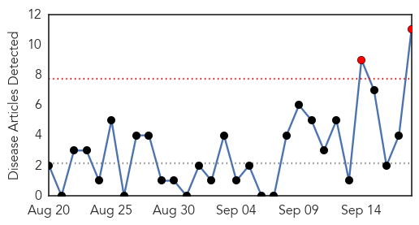
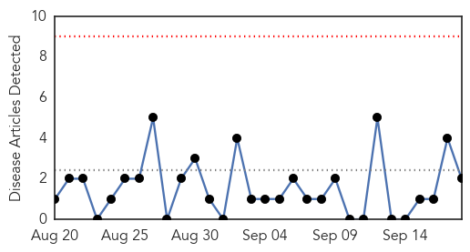
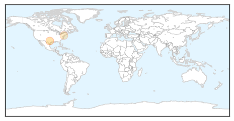
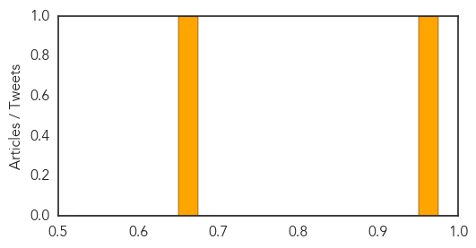

Measles
30-Day Web Trend
2 alerts, 0 warnings

30-Day Twitter Trend
0 alerts, 0 warnings

Article Locations

Article Confidences

Top Articles:
- 0.790
- Medical Relief Operation Stepped up in J&K - India
- 0.742
- 4 Southern California kids infected with enterovirus D68
- 0.696
- Farsnews
- 0.668
- 15 Syrian Children Die of UN Measles Vaccines
- 0.661
- Wrongly mixed vaccine suspected in deaths of 15 Syrian infants
- 0.614
- Union Government provides massive relief in flood affected J K Rescue
- 0.604
- 15 Children Die Because Medics 'Administered Anaesthetic instead of Measles Vaccination'
- 0.578
- Sabotage Suspected In Death Of Dozens Of Syrian Children From Measles Vaccine
- 0.542
- Mistake in Vaccination Campaign Kills 15 Syrian Children
- 0.521
- Measles vaccination campaign halted in northern Syria after up to 50 children die
- 0.504
- Human error to blame for vaccine mix-up that killed 15 children in Syria, says Western-backed opposition
Top Tweets:
-
No tweets found for Sep 18, 2014
Pertussis
30-Day Web Trend
0 alerts, 0 warnings

30-Day Twitter Trend
0 alerts, 0 warnings

Article Locations
Article Confidences
Top Articles:
Top Tweets:
-
No tweets found for Sep 18, 2014